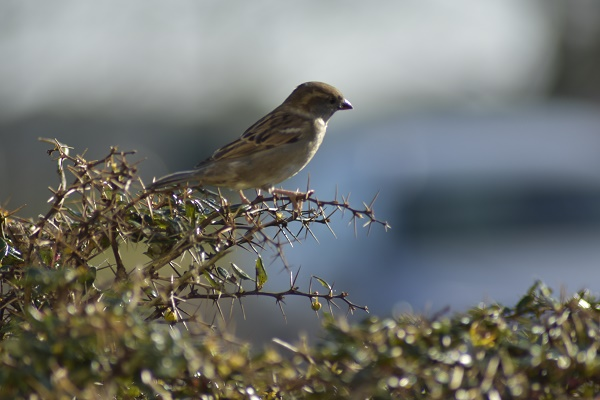
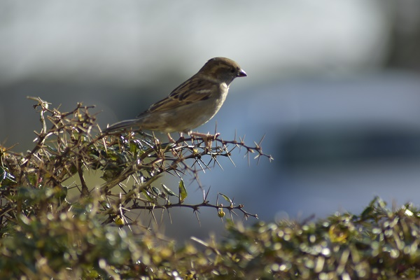
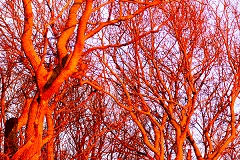
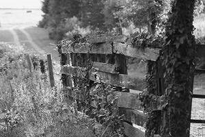

Even een
Bericht
Welkom op de site van Fons Baardman.
Dit is de uitwerking van les 22.
U ziet enkele foto's die ook te
vinden zijn bij
Werk Aan De Muur.
Dit is de uitwerking van les 22.
U ziet enkele foto's die ook te
vinden zijn bij
Werk Aan De Muur.
Enkele Links
Bezoek ze eens
9 FOTO'S
Te vinden bij Werk Aan De Muur
 
 
  

Ook als Behang